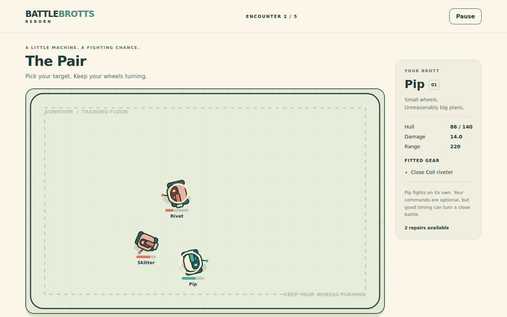
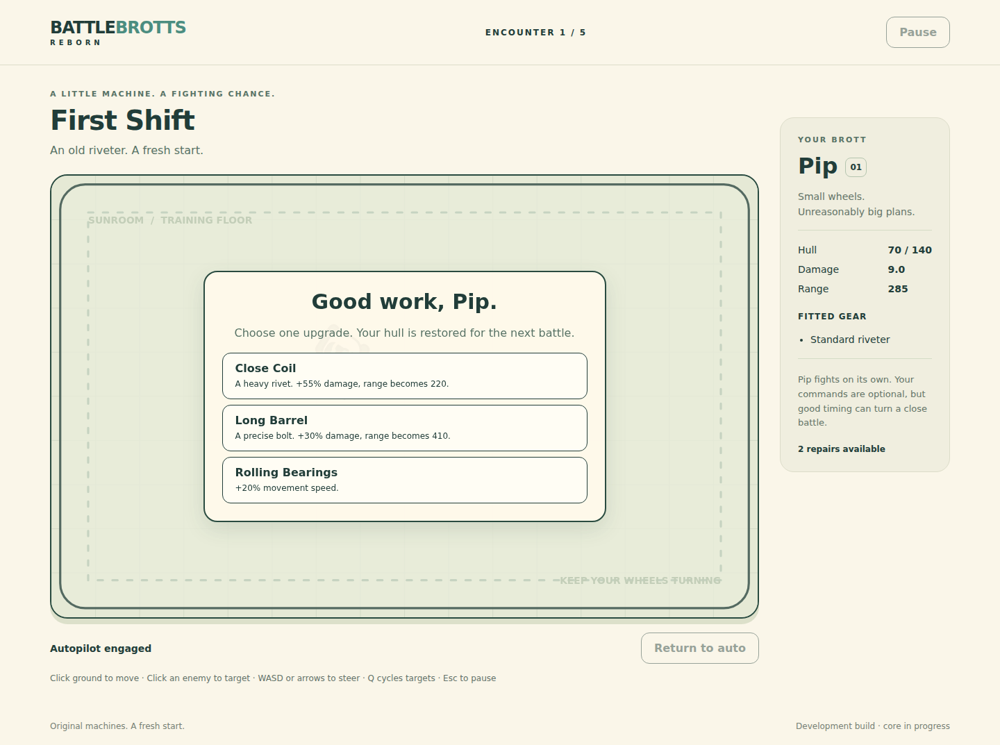

Keep the spark.
Watching different machines fight. Seeing a new build behave differently. Getting another chance after a close loss.
01 / A FRESH START
Watch Pip fight. Choose its gear. Take the wheel when it matters.
Five encounters in the Sunroom Scrapyard. One little machine with unreasonably big plans.
Meet Pip and play
02 / WHAT WAS WORTH KEEPING
Watching different machines fight. Seeing a new build behave differently. Getting another chance after a close loss.
No programming editor, leagues or shop economy. Start with one Brott. Make a clear equipment choice after each victory.
A passing simulation test cannot tell us whether the controls feel responsive or the battle is readable. Inspect the real browser journey too.
03 / BUILD A LITTLE DIFFERENT
A heavy close-range hit, or a precise bolt from farther away.
Choose one direction. Then complement it with faster firing, more hull, better steering or a little self-repair. Eight upgrades, four choices per run.
Choosing an upgrade restores Pip's hull before the next encounter.

04 / WATCH. THEN MAKE YOUR MOVE.
Click ground to set a destination. Pip keeps firing while it travels. A new target does not cancel your route.
The boss locks its aim line before a three-bolt burst. Move sideways after the warning to leave that line.
WASD or arrows steer. Q cycles targets. Pause takes a breather. Return to auto lets Pip take over again.
The final captioned demo will show actual battle input, a build choice and an outcome. Recording is not yet complete.
05 / BUILT SMALL. CHECKED IN PLAY.
Four regular encounters, one boss, two repairs and a new build to try next time.
No account, runtime AI, cloud service or analytics. Original geometric art and optional synthesized mechanical sounds.
Play this buildPlain JavaScript and a dependency-free static build. Final runnable archive and demo links will be added after release verification.
Browse the source ↗Testing and independent review are agent-only, not human playtesting. Final public-browser and release checks are still in progress.
Arrow keys move between slides. Home and End jump to the first and last. Browser printing includes all five slides.